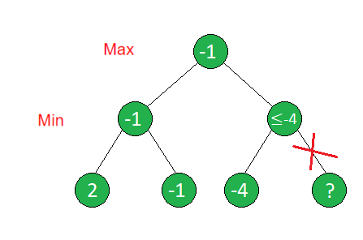

Algorytm minimax jest powszechnie używany w teorii decyzji oraz w grach wymagających ruchów komputera.
Polega na maksymalizacji minimalnego zysku w każdym ruchu.
Tworzy drzewo rozwiązań i na jego
podstawie wybiera ruchy, które doprowadzą do najkorzystniejszej sytuacji na planszy dla komputera:
- Węzły reprezentują stan gry po wykonaniu konkretnego ruchu.
- Gałęzie reprezentują możliwe ruchy.
- Liście reprezentują sytuacje końcowe, gdzie znany jest wynik gry (np. wygrana, przegrana lub remis)
Dla każdego liścia w drzewie zostaje przypisana wartość. Zakładając, że algorytm maksymalizuje zysk, przykładowe wartości liści mogą wyglądać następująco:
- Wygrana = 10
- Remis = 0
- Przegrana = -10
Algorytm zakłada, że przeciwnik (gracz) będzie wybierał optymalne ruchy w swoich turach.
Założenie to jest potrzebne, ponieważ w sytuacji, w której algorytm nie zakładałby optymalnej gry przeciwnika,
mógłby błędnie wybrać ruch, który działa tylko w scenariuszu błędów gracza,
ale nie gwarantuje najlepszego wyniku w przypadku optymalnej gry.
Cięcia alfa-beta
Cięcia alfa-beta „odcinają” gałąź, jeśli algorytm wie, że uzyska z niej gorszy wynik niż z gałęzi poprzedniej.
Dzięki temu algorytm nie przeszukuje niepotrzebnie wszystkich gałęzi, co prowadzi do przyspieszenia działania.

Jak widać na przykładzie, węzeł maksymalizujący (korzeń) wie, że z lewej gałęzi uzyska wartość -1, a z prawej nie większą niż -4.
Dzięki temu nie ma potrzeby kontynuowania algorytmu dla prawej gałęzi.
Takie usprawnienie może być szczególnie odczuwalne dla drzew głębokich,
gdzie liczba iteracji znacząco zwiększa się z każdym poziomem.